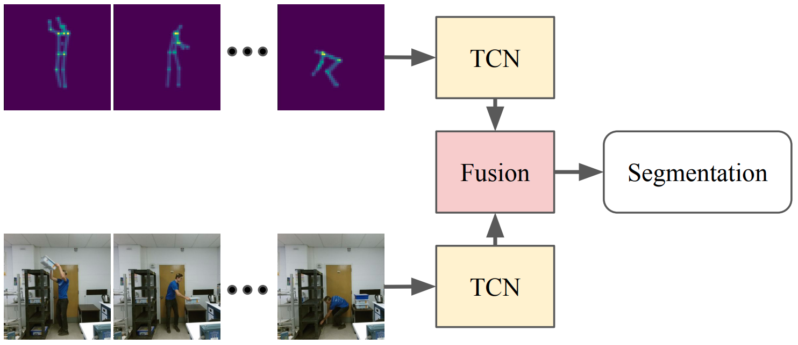
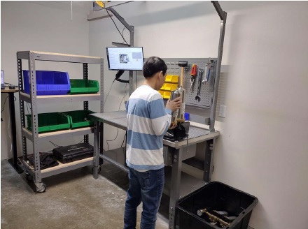
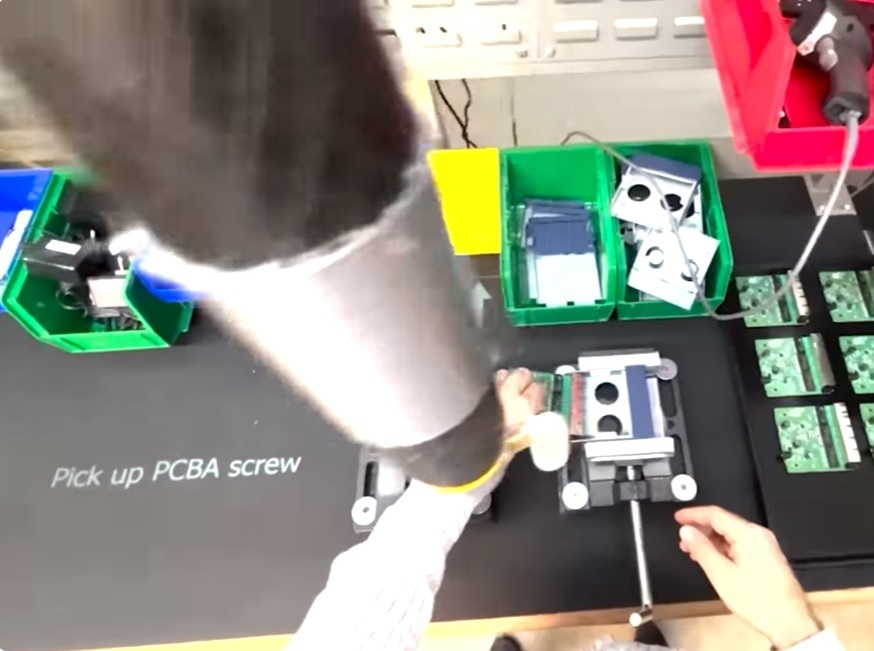
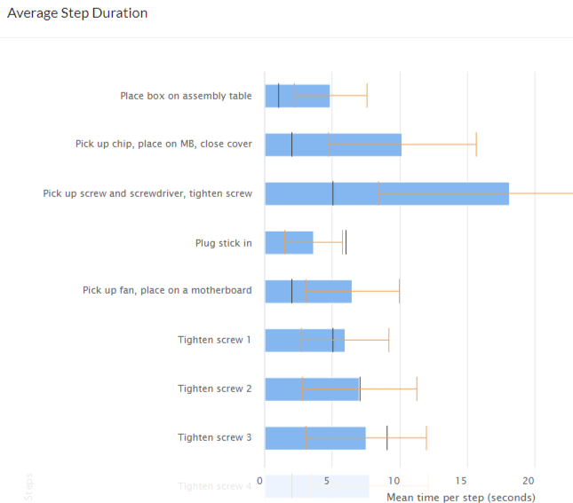
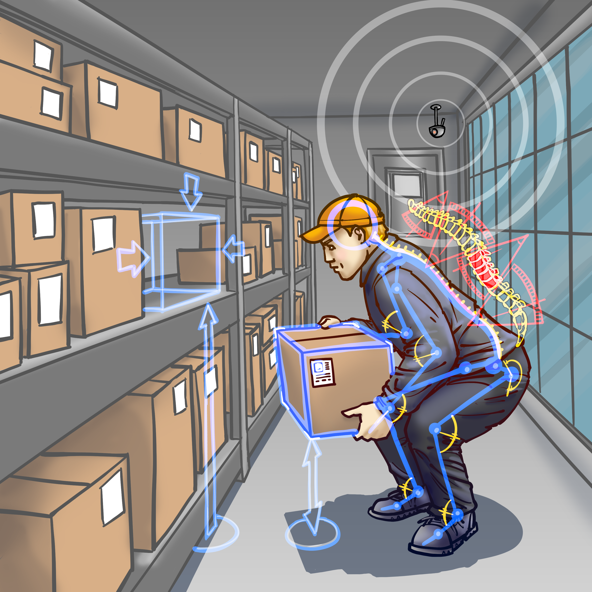
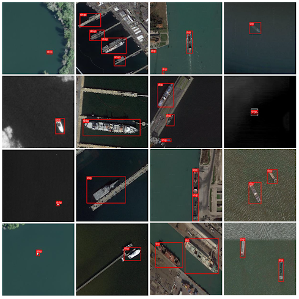

|
Muhammad Naufil I am a computer vision research engineer at Retrocausal in Karachi, where I work on human action recognition and 3D human pose estimation. At Retrocausal I've worked on AI Copilot for Manufacturing Assembly Optimization, Guidance Analytics and Trace and Ergonomic Safety. I'm interested in Vision Language Models, 3D vision, 3D Human Pose Estimation, and Human Action Recognition. Email / Google Scholar / Github / Linkedin |
{kind=link}
Selected Publications |
|

|
Action Segmentation Using 2D Skeleton Heatmaps
Syed Waleed Haider, Muhammad Usama, Anas Zafar, Muhammad Naufil, Andrey Konin, Zeeshan Zia, Quoc-Huy Tran, Submitted to ICRA, 2023 arXiv This paper presents a 2D skeleton-based action segmentation method with applications in fine-grained human activity recognition. In contrast with state-of-the-art methods which directly take sequences of 3D skeleton coordinates as inputs and apply Graph Convolutional Networks (GCNs) for spatiotemporal feature learning, our main idea is to use sequences of 2D skeleton heatmaps as inputs and employ Temporal Convolutional Networks (TCNs) to extract spatiotemporal features. Despite lacking 3D information, our approach yields comparable/superior performances and better robustness against missing keypoints than previous methods on action segmentation datasets. Moreover, we improve the performances further by using both 2D skeleton heatmaps and RGB videos as inputs. To our best knowledge, this is the first work to utilize 2D skeleton heatmap inputs and the first work to explore 2D skeleton+RGB fusion for action segmentation. |
|

|
AI-mediated Job Status Tracking in AR as a No-Code service
Andrey Konin, Shakeeb Siddiqui, Hasan Gilani, Muhammad Mudassir, Hassan Ahmed, Taban Shaukat, Muhammad Naufil, Awais Ahmed, Quoc-Huy Tran, Zeeshan Zia Published in ISMAR, 2022 IEEE Sophisticated AR experiences that can track the status of a manual assembly or maintenance job and provide corresponding guidance are built by teams of computer vision engineers over several months. These engineers model temporal causation on top of object detection and human skeletal tracking provided by traditional AR and AI SDKs. We demonstrate our Pathfinder system which automatically builds computational models of a complex manual task, such as a manufacturing assembly activity, given recorded demonstrations of the task - without requiring any custom coding. These computational models enable ordinary AR developers to build AI-mediated feedback in minutes instead of months. Keywords: Task Guidance, Computer Vision, Human Computer Interaction, Machine Learning, Industrial Applications |
Work Experience |
|  |
Manual Assembly Copilot
Retrocausal Empower your operators, engineers, and managers to dramatically boost the quality and productivity of your manual processes. Create digital mistake-proofing mechanisms for a variety of assembly and packing processes. Pathfinder tracks individual steps of an assembly process, and offers audible and visual alerts to help associates avoid mistakes. |
|  |
Guidance, Analytics and Trace
Retrocausal Collects timing data for every cycle performed on a line, at a fine-grained level. It identifies non-value add work as well as most efficiently performed cycles. These capabilities directly aid industrial engineers in improving processes. Additionally, Pathfinder grades individual assembly sessions, versus ideal number of cycles that could have been performed and considering operator mistakes. This further helps engineers compare and contrast different sessions and work styles to rapidly improve processes. |
|  |
Monocular Camera MoCap System
Retrocausal Pathfinder provides computer vision based “in-process” health and safety analytics as part of the platform. The solution allows analyzing videos recorded from ordinary phone cameras, either using Pathfinder Android or iPhone app or by uploading videos through the web portal. Pathfinder uses its state-of-the-art computer vision technology to compute 3D skeletal poses and extract 3D joint angles. Our technology is optimized for industrial use cases emphasizing a certain degree of robustness to partial obfuscation as well as extreme postures of the human body. This has significant advantages over wearables, goniometers, or Marker-Based Motion Capture Systems. It allows flexible application include the use of a moving camera, and in adapting to crammed or crowded spaces and is therefore easier to scale. Finally the computer vision solution typically captures more information than a small group of markers, e.g. regarding body shape. |
Projects |

|
Supervised Learning Based Autonomous Car
Muhammad Naufil, Faiz ur Rehman, Syed Muhammad Haziq, Danish Khalid Bachelor Thesis Project, 2020 at NED University of Engineering & Technology Predicts steering wheel angle, detects object and classifies traffic signal lights at 4 FPS on a Jetson Nano. |
|  |
Detecting Ships in Ports to Avoid Congestion and Manage Traffic
HuggingFace Competition, 2023 Exhausted Yolov5, v7 and v8 and push the mAP to 0.59. Learned at the end of the competition that all I needed to do is train and eval on evenly splitted images, so that object detection model can look at the images in a zoomed-in fashion. |
|
RedditGPT
Finetuned GPT2 on the recent public anonymous conversations from Reddit to capture the genuine public sentiment regarding the recent unfolding events in Pakistan since last year. Hosted project link here. Since this runs on CPU on huggingface free hosting, it takes about 500 seconds to respond. Alternatively, you can also run it on your GPU-enabled PC. |
|
GPT2 from Scratch
Add fundamental building blocks to the transformer decoder one by one and observe the resulting impact with each training. Trained 2 models. One of them on a Shakespeare dataset, and other on a small subset of OpenWebText. |